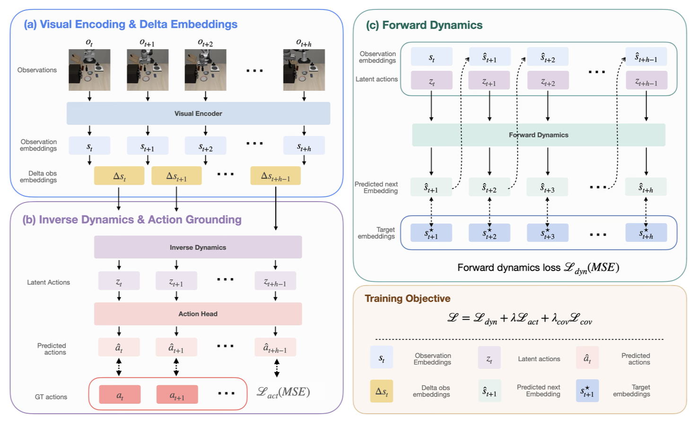

Latent action models learn action representations from action-free video, scaling visuomotor learning beyond the limited labeled demonstrations available in robotics. These models typically train a latent inverse dynamics model jointly with a forward dynamics model on paired observations, hoping the latent captures the underlying action through bottlenecked reconstruction. However, since actions cause state changes, an action representation should reflect the change in state it produces. Building on this inductive prior, we present DOLA (Delta-Obs Latent Actions), a new latent action model that explicitly conditions the inverse dynamics on the difference between consecutive observation embeddings, jointly trained with the encoder and an autoregressive forward dynamics model that reconstructs multiple future embeddings. On a suite of four simulated environments, DOLA learns latent actions that linearly recover ground-truth actions across both manipulation and navigation tasks with only 5% ground-truth action labels. A single DOLA model trained on unpaired data from two robots learns a shared latent space supporting open-loop trajectory transfer across embodiments. On a real Franka arm, DOLA executes zero-shot video plans from an off-the-shelf video generator with just 75 minutes of task-agnostic calibration data.
Delta-Obs Latent Actions (DOLA) — a latent action model that constrains latent actions to encode visual change by construction. A visual encoder \(f\) maps observations to embeddings \(s_t = f(o_t)\). The inverse dynamics model computes latent actions from embedding differences, \(z_t = q(s_t - s_{t-1})\), making the latent depend only on temporal visual change.
The architecture of DOLA is shown below. A causal transformer forward dynamics model (FDM) autoregressively predicts multiple future embeddings from past embeddings and latent actions, providing multi-step temporal supervision. When sparse ground-truth action labels are available (5% of the training data), an auxiliary linear action head aligns latent actions with real actions. The encoder, inverse dynamics model, forward dynamics model, and action head are trained jointly end-to-end using forward dynamics, action prediction, and covariance regularization losses.

Figure 1. DOLA architecture — visual encoder, delta-conditioned IDM, causal transformer FDM, and linear action head trained jointly with a single objective.
Open-loop
We evaluate DOLA on zero-shot execution of generated video plans using a real Franka arm. Given an initial scene image and a text description of the desired task, an off-the-shelf video generator produces a visual motion plan, which is then executed open-loop using DOLA as the inverse dynamics model.
The robot is trained using only 75 minutes of task-agnostic calibration data consisting of random end-effector motions, without any demonstrations of the downstream tasks or target objects. Despite never observing the target objects during training, the robot successfully executes the generated plans in a zero-shot setting.
DOLA is trained using only random end-effector motions collected in an empty workspace, without any task demonstrations, object interactions, or language supervision. These trajectories are used solely to learn the inverse dynamics mapping from visual change to executable robot actions.
Random end-effector motions collected in an empty workspace — no objects, no tasks, no language.
AI Generated Video Plan
Robot Execution
AI Generated Video Plan
Robot Execution
Open-loop
To demonstrate that the learned latent action transfers across embodiments, we infer the latent action sequence from a Panda video, decode it through the UR5e action head, and replay the resulting delta joint commands on the UR5e robot. As shown in the videos below, the shared latent action model produces a UR5e trajectory that tracks the original Panda demonstration, indicating that the latent captures action content decodable across embodiments.
Success
Success
Success
Failure
Failure
Failure